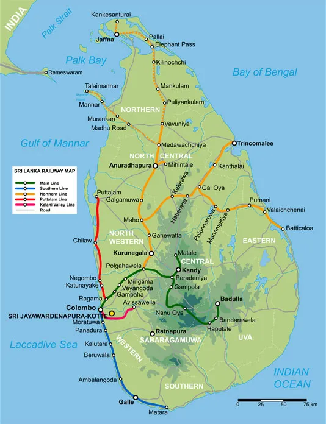

Railway Network Map of Sri Lanka
Railway Operating Lines
Sri Lanka Railways operates multiple railway routes throughout Sri Lanka. Different type of Services are offered to passengers based on the trains that are used in these specific railway lines. Following lists the existing railway routes of Sri Lanka Railways:
- Main Line
- Matale Line
- Coastal Line
- Northern Line
- Batticoloa Line
- Kelani Valley Line
- Trinco Line
- Talaimannar Line Line
Further information is listed on Sri Lanka Railway webpage